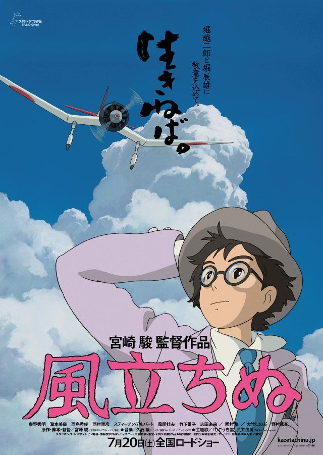

La princesa Mononoke (もののけ姫 Mononoke Hime?) es una película de animación japonesa escrita y dirigida por Hayao Miyazaki, estrenada en 1997.1 Fue producida por Studio Ghibli y distribuida por Tōhō. La princesa Mononoke fue el undécimo largometraje de Studio Ghibli y el sexto dirigido por Miyazaki.
Ambientada en un Japón del período Muromachi, se centra en la lucha entre los guardianes sobrenaturales de un bosque y los humanos que profanan sus recursos, visto por el forastero Ashitaka. En realidad, Mononoke (物の怪（もののけ）?) no es un nombre, sino una descripción que puede ser traducida en este contexto como «espíritu vengador»; por lo que el título de la película literalmente podría traducirse como La princesa de los espíritus vengadores.
La cinta fue estrenada en Japón el 12 de julio de 1997, mientras que en Estados Unidos lo fue dos años más tarde, el 29 de octubre de 1999. Fue un éxito de taquilla casi instantáneo, teniendo a su vez una repercusión mediática excepcional, convirtiéndose así en la película de mayor recaudación en Japón de 1997. El filme también fue la mayor película taquillera de Japón hasta el lanzamiento de Titanic en noviembre de ese año. También ocupó el primer puesto de las películas más taquilleras de la historia de Japón hasta el 2001, cuando se estrenó El viaje de Chihiro, otra película escrita y dirigida por Miyazaki. Fue doblada al inglés y distribuida en el continente americano por Miramax, y, aunque la película no gozó del mismo éxito que en su país de origen, obtuvo ventas positivas, aumentando de manera considerable la popularidad de Ghibli y su influencia fuera de Japón.
Argumento :
El último príncipe emishi, Ashitaka, salva a su aldea del ataque de un Tatarigami, un demonio que destruye todo lo viviente con tan solo tocarlo. Usando su arco, Ashitaka le da muerte, siendo herido por este, dejando una oscura marca en su brazo. Al observar el cadáver del monstruo, Ashitaka descubre que en realidad era el dios jabalí Nago, quien fue corrompido hasta convertirse en un tatarigami. Ashitaka consulta a los ancianos de la aldea, temiendo por su vida al sospechar que la herida dejada por el demonio en su mano le haya transmitido su maldición. Estos descubren una enorme bola de hierro en el cuerpo de Nago y comprenden que era la causa de su sufrimiento, lo que llevó al dios a la locura. La anciana del pueblo explica al joven que aunque su herida solamente cubre su brazo, se extenderá por su cuerpo y huesos hasta que muera. La maldición es un arma de doble filo, porque en los momentos donde se deje llevar por el odio obtendrá una fuerza sobrehumana a cambio de que se propague más rápido. Cuando esto ocurre, su brazo se llena de gusanos negros retorciéndose, similares a los que tenía Nago.
La anciana, tras leer la fortuna de Ashitaka, vaticina que solo si viaja hacia el oeste en busca de la tierra natal de Nago y encuentra el lugar de donde proviene la misteriosa bola de hierro tendrá alguna posibilidad de encontrar una cura. También le advierte que durante su viaje deberá "ver con ojos carentes de odio". Al aceptar su destino tiene que aceptar también su exilio de su tierra natal, a la que no podrá volver nunca más, dejando a los emishi sin heredero. Ashitaka monta a Yakul, su leal alce rojo y se dispone a partir sin mirar atrás, ya que está mal visto en la aldea despedirse de alguien que parte al exilio. Solo una persona despide a Ashitaka, su hermana menor Kaya, quien le regala una daga de cristal que le pertenece para que no se olvide de ella.